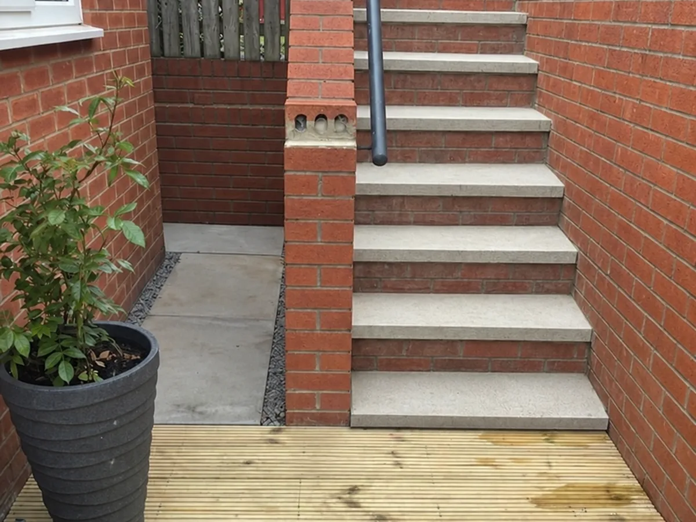

01 · Built from the base
Concrete Work

From paths and slabs to hardstanding and dependable bases, good concrete work starts with careful preparation. We consider the intended load, surrounding levels and access before forming a suitable foundation.
The result is a practical, well-finished surface designed to sit neatly within the wider outdoor space.